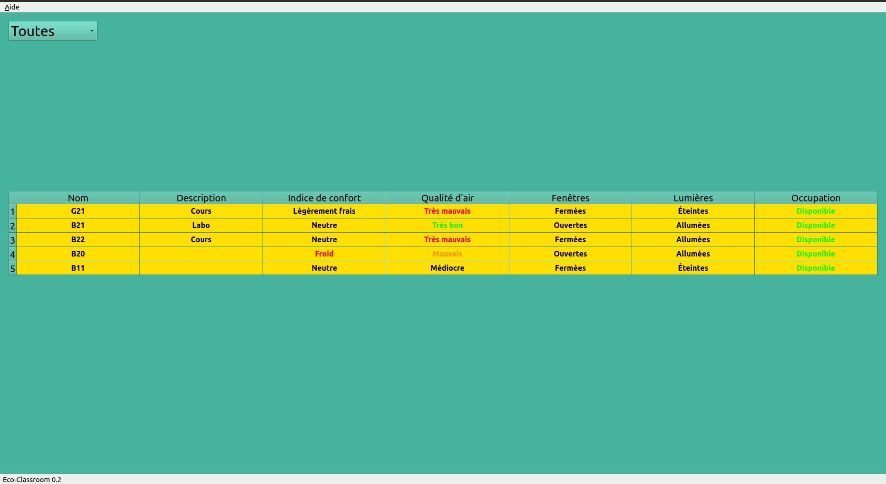
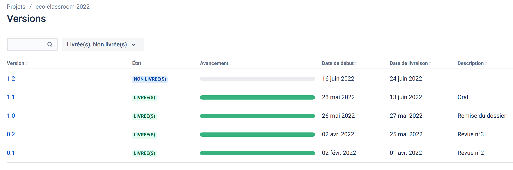
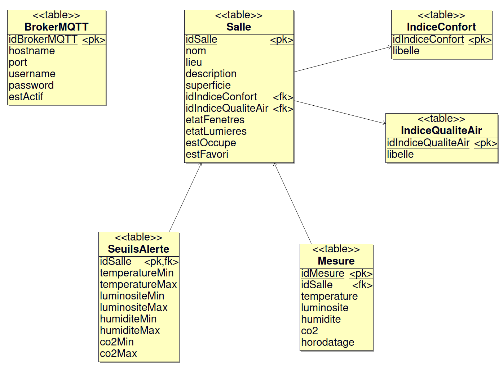

Présentation
Assurer une supervision de salles dans un établissement scolaire.
Chaque salle sera équipée de deux modules connectés afin de détecter et mesurer l’état de celle-ci :
- température, humidité, luminosité et qualité de l’air
- état ouverture/fermeture des fenêtres et l’état allumé/éteint des lumières
Les informations seront accessibles à partir d’une application PC permettant aux personnels d’assurer un suivi et d’intervenir en conséquence.
L'objectif est de superviser l’ensemble des salles afin d’intervenir directement dans les salles concernées (aérer ou fermer les fenêtres, éteindre les lumières).

Ressources logicielles
| Désignation | Caractéristiques |
| Environnement de développement | Qt Creator |
| Bibliothèque logicielle | Qt 5.12.8, QtMqtt |
| Gestionnaire de versions | Git (Hébergement : Github) |
| Générateur de diagrammes UML | BOUML 7.11 |
| Planification | Beesbusy |
| Gestion de projet logiciel | Jira |
| OS du poste de développement | Ubuntu 20.04.1 |
Historique des versions
- Version 1.1 : 11/06/2022
- filtrage avec critères de la liste des salles
- évaluation de l'indice de confort
- Version 1.0 : 27/05/2022
- Version 0.2 : 24/05/2022
- mise à jour des données des salles en temps réel
- édition et suppression d'une salle
- ajout automatique d'une nouvelle salle
- affichage de la liste des salles à partir de critères de filtrage
- Version 0.1 : 03/04/2022
- affichage de la liste des salles à partir de la base de données
- affichage des informations d'une salle en la sélectionnant dans la liste
- mise en oeuvre de la communication MQTT

Auteur
Kanban
eco-classroom-2022
Documentation du code
https://btssn-lasalle-84.github.io/eco-classroom-2022/
Base de données
L'application Qt embarque une base de données SQLite eco-classroom.db.

Structure de la base de données :
CREATE TABLE IF NOT EXISTS IndiceConfort(idIndiceConfort INTEGER PRIMARY KEY, indice INTEGER, libelle VARCHAR);
CREATE TABLE IF NOT EXISTS IndiceQualiteAir(idIndiceQualiteAir INTEGER PRIMARY KEY, libelle VARCHAR);
CREATE TABLE IF NOT EXISTS Salle(
idSalle INTEGER PRIMARY KEY AUTOINCREMENT,
nom VARCHAR,
lieu VARCHAR,
description VARCHAR,
superficie INTEGER DEFAULT 0,
code VARCHAR(4),
idIndiceConfort INTEGER DEFAULT -1,
idIndiceQualiteAir INTEGER DEFAULT 0,
etatFenetres INTEGER DEFAULT 0,
etatLumieres INTEGER DEFAULT 0,
estOccupe INTEGER DEFAULT 0,
estFavori INTEGER DEFAULT 0,
CONSTRAINT IndiceConfort_fk_1 FOREIGN KEY (idIndiceConfort) REFERENCES IndiceConfort(idIndiceConfort),
CONSTRAINT IndiceQualiteAir_fk_1 FOREIGN KEY (idIndiceQualiteAir) REFERENCES IndiceQualiteAir(idIndiceQualiteAir)
);
CREATE TABLE IF NOT EXISTS Mesure(
idMesure INTEGER PRIMARY KEY AUTOINCREMENT,
idSalle INTEGER NOT NULL,
temperature DECIMAL(3,1),
luminosite SMALLINT UNSIGNED,
humidite TINYINT UNSIGNED,
co2 SMALLINT UNSIGNED,
horodatage DATETIME NOT NULL,
CONSTRAINT Salle_fk_1 FOREIGN KEY (idSalle) REFERENCES Salle(idSalle)
);
CREATE TABLE IF NOT EXISTS SeuilsAlerte(
idSalle INTEGER NOT NULL,
temperatureMin DOUBLE NULL,
temperatureMax DOUBLE NULL,
luminositeMin INTEGER NULL,
luminositeMax INTEGER NULL,
humiditeMin INTEGER NULL,
humiditeMax INTEGER NULL,
co2Min INTEGER NULL,
co2Max INTEGER NULL,
PRIMARY KEY (idSalle),
CONSTRAINT Salle_fk_2 FOREIGN KEY (idSalle) REFERENCES Salle(idSalle)
);
CREATE TABLE IF NOT EXISTS BrokerMQTT(
idBrokerMQTT INTEGER PRIMARY KEY AUTOINCREMENT,
hostname VARCHAR NOT NULL,
port INTEGER NOT NULL DEFAULT 1883,
username VARCHAR DEFAULT NULL,
`password` VARCHAR DEFAULT NULL,
estActif INTEGER DEFAULT 1,
);
Initialisation de la base de données :
INSERT INTO IndiceConfort(idIndiceConfort,indice,libelle) VALUES
(-1,0,'inconnu'),
(0,-3,'froid'),
(1,-2,'frais'),
(2,-1,'légèrement frais'),
(3,0,'neutre'),
(4,1,'légèrement tiède'),
(5,2,'tiède'),
(6,3,'chaud');
INSERT INTO IndiceQualiteAir(idIndiceQualiteAir,libelle) VALUES
(0,'inconnu'),
(1,'très bon'),
(2,'bon'),
(3,'moyen'),
(4,'médiocre'),
(5,'mauvais'),
(6,'très mauvais');
Quelques données de test :
INSERT INTO Salle(nom, lieu, description, superficie, code) VALUES ('B11','Bat. BTS','Cours','15','0000');
INSERT INTO Salle(nom, lieu, description, superficie, code) VALUES ('B20','Bat. BTS','Atelier','60','1234');
INSERT INTO Salle(nom, lieu, description, superficie, code) VALUES ('B21','Bat. BTS','Labo','40','1234');
INSERT INTO Salle(nom, lieu, description, superficie, code) VALUES ('B22','Bat. BTS','Cours','50','6666');
INSERT INTO BrokerMQTT(hostname,estActif) VALUES ('192.168.52.7',1);
Qt MQTT
Qt MQTT fournit une implémentation conforme à la norme MQTT.
Qt MQTT fait parti de Qt For Automation et pas directement de Qt. Il faut donc l'installer.
Installation
- Identifier la version de Qt :
$ qmake -v
QMake version 3.1
Using Qt version 5.12.8 in /usr/lib/x86_64-linux-gnu
Ici, la version de Qt est 5.12.8.
- Récupérer le code source du module
mqtt en clonant le dépôt git
$ sudo git clone https://code.qt.io/qt/qtmqtt.git
$ cd qtmqtt/
- Sélectionner la branche qui correspond à la version de Qt utilisée
$ sudo git checkout 5.12.8
- Installer le paquet fournissant les fichiers d'en-tête de développement indépendants
$ sudo apt install qtbase5-private-dev
- Fabriquer et installer le module
mqtt
$ sudo qmake
$ sudo make
$ sudo make install
Pour accèder aux classes du module Qt MQTT, il faudra ajouter le module mqtt au fichier de projet .pro :
Glossaire MQTT
Les messages sont envoyés par des « publishers » sur un « topic » (canal de communication) à un « broker » (serveur).
Ces messages peuvent être lus par des « subscribers » (abonnés).
Les « topics » peuvent avoir une hiérarchie qui permettra de sélectionner les informations.
Les « publishers » et « subscribers » sont considérés comme des « clients » MQTT. Le « broker » est vu comme un serveur MQTT.
Dans le projet eco-classroom :
- les « publishers » sont les modules sonde et détection réparties dans les différentes salles
- les « subscribers » sont les applications de supervision (Mobile ou Desktop)
Structure des topics
Racine de la hiérarchie des topics : salles
Les données des modules sonde et détection sont publiées sur le topic : salles/nom/type
- Le champ
nom indique le nome de la salle, par exemple : B20, B11, ...
- Le champ
type peut prendre les valeurs suivantes : temperature|humidite|confort|luminosite|co2|air|fenetres|lumieres|occupation
Exemple : La donnée 20.5 associé au topic salles/B20/temperature sera une température en Celsius.
Les topics pour une salle, ici B20 :
salles/B20/temperature
salles/B20/humidite
salles/B20/confort
salles/B20/luminosite
salles/B20/co2
salles/B20/air
salles/B20/fenetres
salles/B20/lumieres
salles/B20/occupation
Deux « wild-cards » (jokers) sont utilisables dans les topics : + et # :
+ : sujet unique. Par exemple : salles/+/temperature sera abonné pour recevoir la température de toutes les salles (salles/B20/temperature, salles/B11/temperature, ...# : multi-sujets. Par exemple : salles/# sera abonné à toutes les données de toutes les salles (salles/B20, salles/B11, ...)
©️ LaSalle Avignon 2022